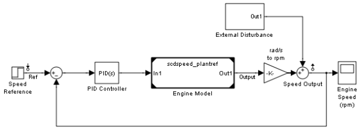
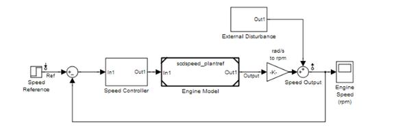
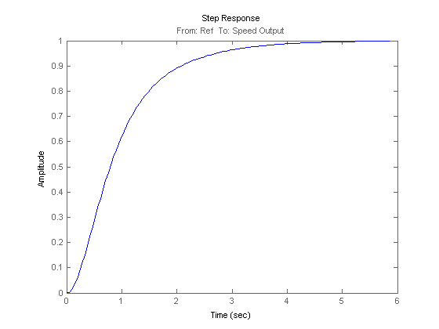

Linearization of Models with Model References
This demonstration illustrates the features available in Simulink® Control Design™ for linearizing models containing references to other models with a Model block.
Contents
Linear Analysis
The model scdspeed_ctrlloop is a componentized version of the model scdspeedctrl. In this model, the engine speed model is a component represented in the model scdspeed_plantref which is referenced using a model reference block. To open the engine model, type
topmdl = 'scdspeed_ctrlloop';
open_system(topmdl);
 Initially, the reference is set to run its simulation in accelerator mode. The accelerator simulation mode is indicated by the black triangles on the corners of the model block scdspeed_ctrlloop/Engine Model.
By default, Engine Model reference block is set to accelerator simulation mode, as indicated by the block triangles on the block. Linearizing the model with this block set to accelerator simulation mode numerically perturbs the entire Engine Model block. The accuracy of this linearization is very sensitive to the blocks within the Engine model. In particular, the variable transport delay block is very problematic.
To achieve an accurate linearization, set the model reference block to normal simulation mode to allow the block-by-block linearization of the referenced model by typing
set_param('scdspeed_ctrlloop/Engine Model','SimulationMode','Normal')
Notice that the corners of the model block are now white triangles indicating that its simulation mode is set to normal, as showing in the following figure.

Linearize the model between the speed reference and the speed output and plot the resulting step response by typing
io(1) = linio('scdspeed_ctrlloop/Speed Reference',1,'in'); io(2) = linio('scdspeed_ctrlloop/Speed Output',1,'out'); sys_normal = linearize(topmdl,io); step(sys_normal);
Close the Simulink model.
bdclose('scdspeed_ctrlloop');
Another benefit of switching the model reference to normal mode simulation is that you can take advantage of the exact delay representations.
For more information on linearizing models with delays see the demonstration "Linearizing Models with Delays".